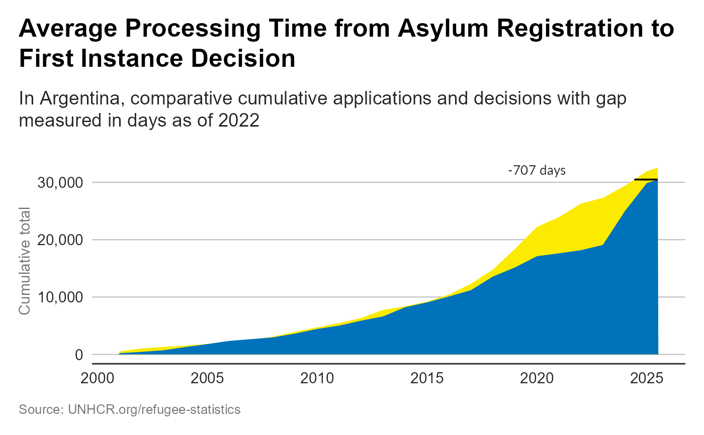
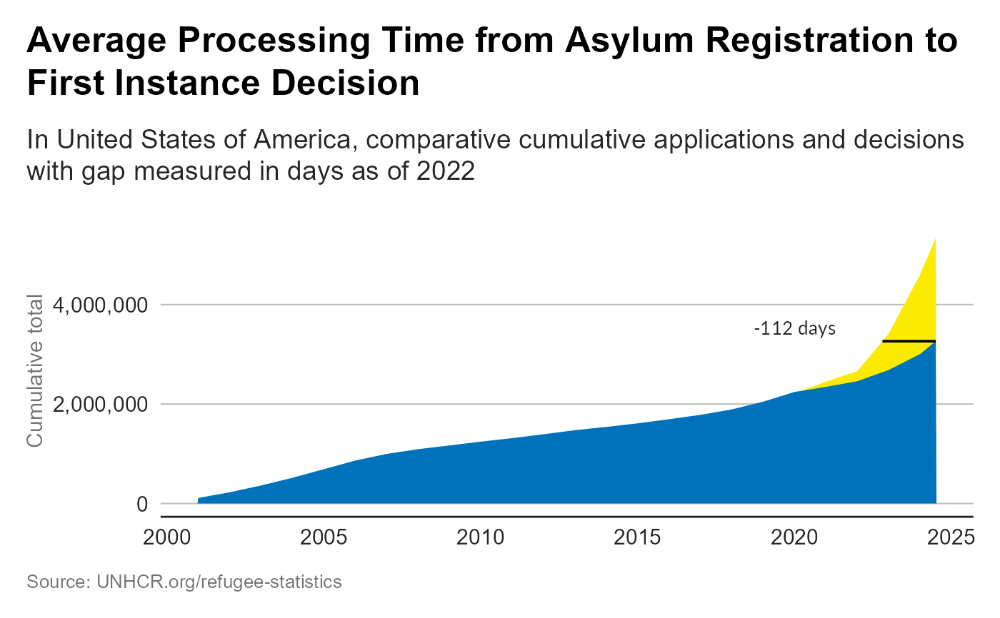
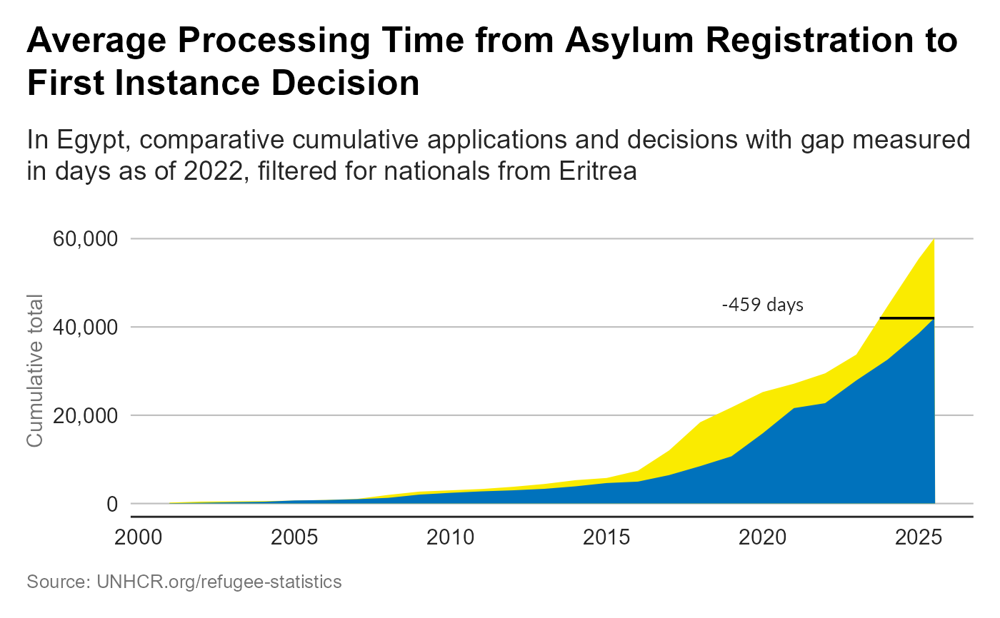

Plot Average processing time from registration to first instance asylum decision
Source:R/plot_ctr_processing_time.R
plot_ctr_processing_time.RdThis indicator measures the average number of days from the date of completion of registration of the asylum application to the date of notification of first instance asylum decision for all persons who were notified of a first instance RSD/asylum decision during the reporting period.
Usage
plot_ctr_processing_time(
year = 2022,
country_asylum_iso3c = country_asylum_iso3,
country_origin_iso3c = NULL,
procedureType = NULL
)Arguments
- year
Numeric value of the year (for instance 2020)
- country_asylum_iso3c
Character value with the ISO-3 character code of the Country of Asylum
- country_origin_iso3c
Character value with the ISO-3 character code of the Country of Asylum - if NUL then all countries are included
- procedureType
indicates whether "G" (Government) "J" (Joint) "U" (UNHCR)
Details
Status determination procedures are a core protection function and the principle mechanism through which international protection needs of Persons of Concern may be determined in accordance with the key provisions of the 1951 Convention and 1967 Protocol relating to the Status of Refugees, the 1954 Convention relating to the Status of Stateless Persons, or relevant regional refugee protection instruments. Status determination procedures are therefore central to the full and effective enjoyment of the universal right to seek and enjoy asylum and the specific rights guaranteed by the above instruments.
A prolonged waiting period during the status determination procedure is an important indicator of the state of efficiency, fairness, adaptability integrity and hence, overall quality of the national asylum or, depending on the context, UNHCR Mandate RSD procedure, including the timeliness and effectiveness of the overall protection response in the country.
(RBM Outcome Indicator 2.1) - see UNHCR Intranet - Credit to Hisham Galal for the chart initial idea and script
Examples
plot_ctr_processing_time(
year = 2022,
country_asylum_iso3c = "ARG"
)

plot_ctr_processing_time(
year = 2022,
country_asylum_iso3c = "USA"
)

## Display a filtered version of the chart for a specific country and procedure
plot_ctr_processing_time(
year = 2022,
country_asylum_iso3c = "EGY",
country_origin_iso3c = "ERI",
procedureType = "U"
)
